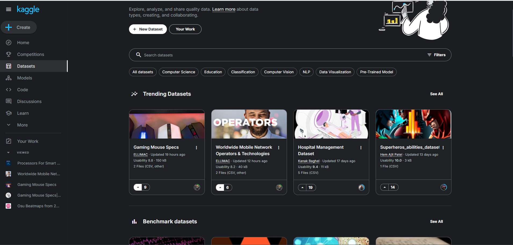
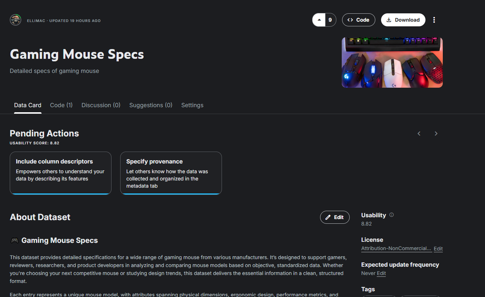
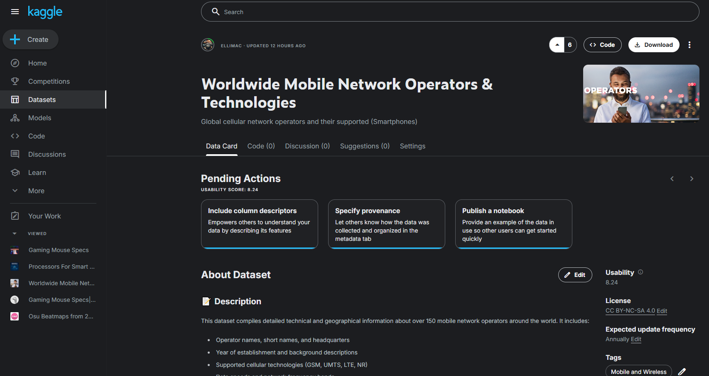

[Dataset] 2 Datasets : Gaming Mouse Specs & Worldwide Mobile Network Operators and Technologies
16 Juin 2025
Les 2 datasets sont respectivement #1 et #2 sur les Trending Datasets !



Gaming Mouse Specs : ? vues - +250 téléchargements
Mobile Network Operators : ? k vues - +100 téléchargements